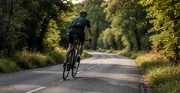
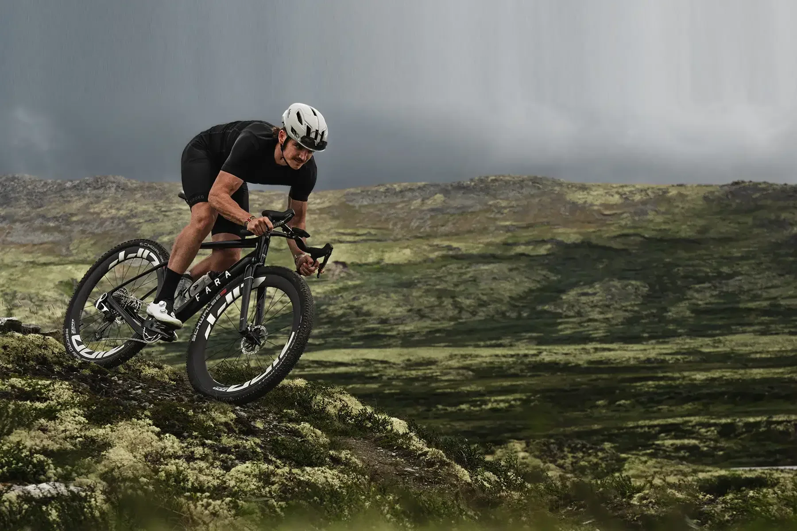
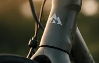

01
Vælg din cykel
Find ud af, hvad du skal kigge efter som nybegynder, og hvilken cykel der passer til dit behov.
Læs guiden
Vi guider dig gennem alt det vigtigste – fra valg af cykel til din første tur på landevejen. En simpel og motiverende guide til en sjovere og sundere hverdag.
Enkle guides uden unødvendigt jargon.
Fra ruter til vedligeholdelse.
Tag de første ture sammen med andre.
Oplevelser, frihed og mental ro.
Kom godt i gang

01
Find ud af, hvad du skal kigge efter som nybegynder, og hvilken cykel der passer til dit behov.
Læs guiden02
Lær at vælge en overkommelig rute og forberede dig på din første tur.
Læs guiden
03
Det nødvendige udstyr til din første tur – og hvad der er rart at have.
Læs guiden